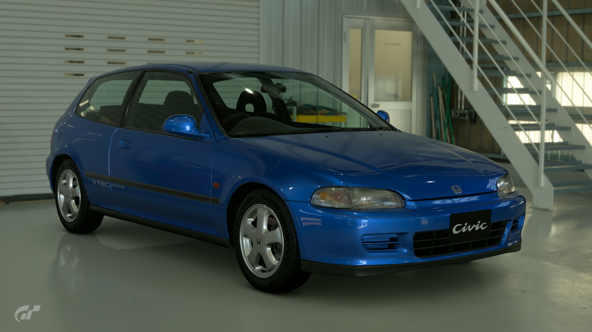
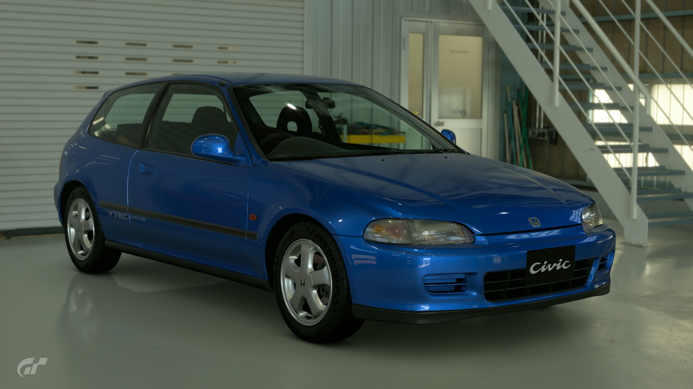

1993 Honda Civic SiR
Compact, lightweight, and low to the ground, with an aggressive yet attractive body style, the fifth generation Civic, introduced in 1991, is the quintessential boy-racer car. Many consider this model to be one of the best handling FF (front engine/front-wheel drive) cars on the planet. The chassis feature a double-wishbone suspension and steering system that made the car a monster through corners. The top-of-the-line SiR-II came with a naturally-aspirated 1.6-liter DOHC VTEC engine. It was, and remains, the pride of Japan. This Civic is still popular today, thanks to predecessors like this 1993 model.[
- Used (35600 mi)
- Stock
- 5MT
- Saitama, Japan
- Blue
- 167hp
¥1,500,000